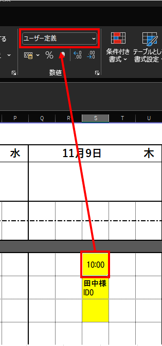
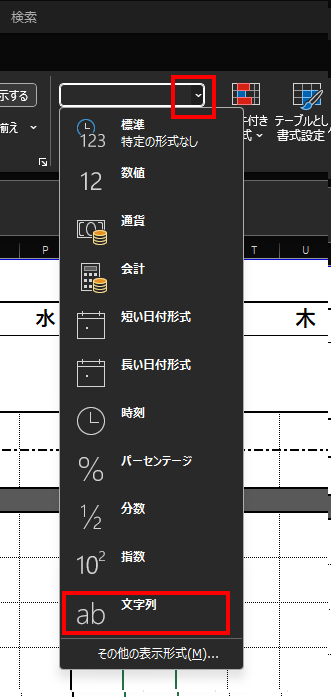
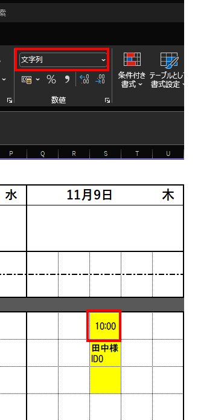
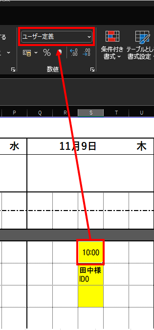

目次
セルの書式設定が"文字列"ではありません。【エラーコード::Common0048】
原因
エクセルのセルの書式設定が"文字列"でない場合に送付されます。
"ユーザー定義"となっているセルは、セルを選択すると下記のように書式が"ユーザー定義"となっています。
解決方法
赤枠部をクリックして、書式を"文字列"に変更してください。

時間を入力し直し、書式が"文字列"となっていることを確認して保存します。

エラーの原因や、解決方法等が確認できます。
エクセルのセルの書式設定が"文字列"でない場合に送付されます。
"ユーザー定義"となっているセルは、セルを選択すると下記のように書式が"ユーザー定義"となっています。
赤枠部をクリックして、書式を"文字列"に変更してください。
時間を入力し直し、書式が"文字列"となっていることを確認して保存します。